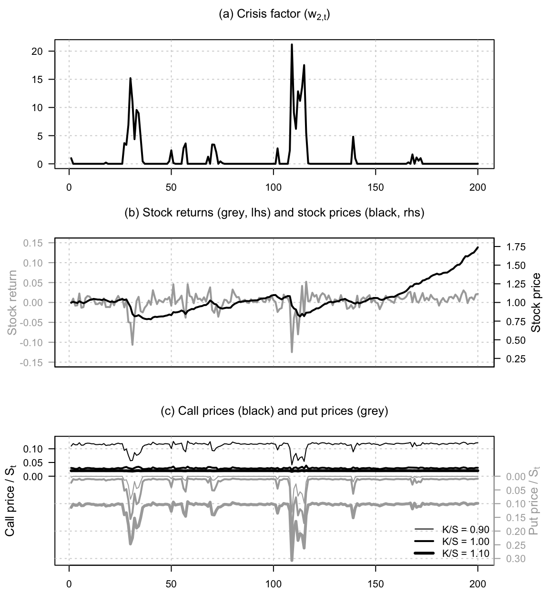
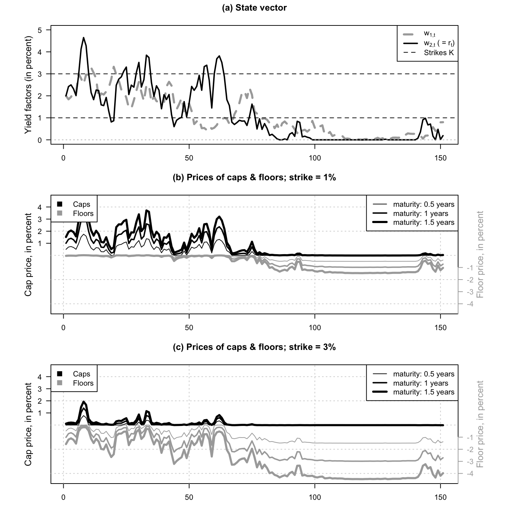
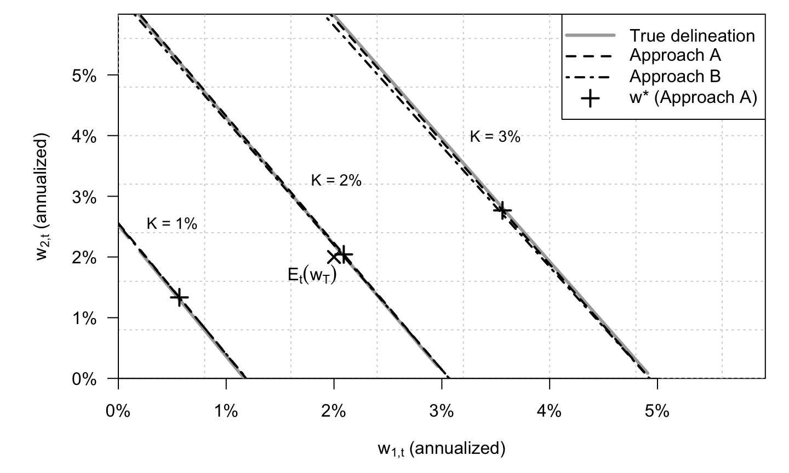
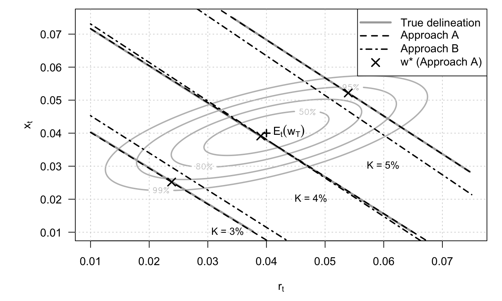
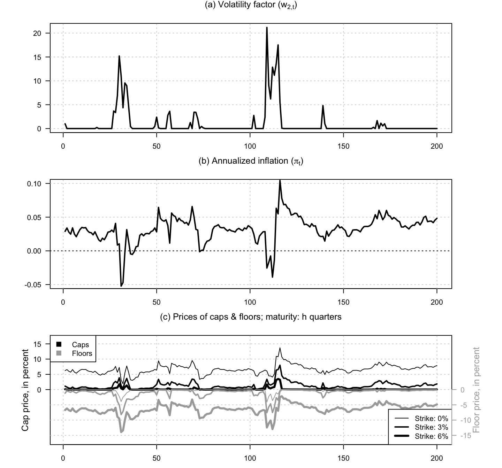
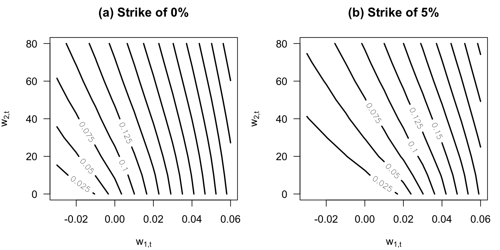
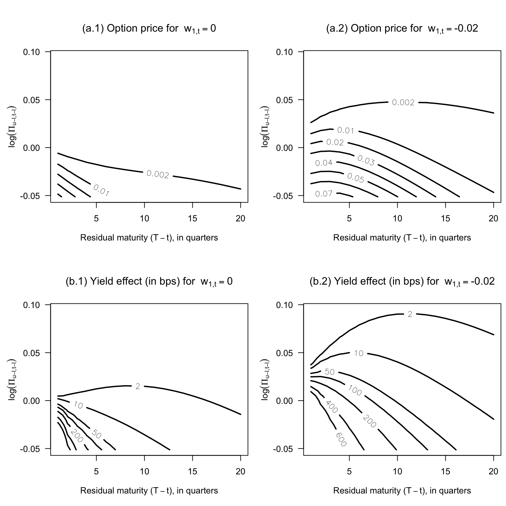

Chapter 9 Options
9.1 Stock call and put prices in a two-factor affine model with stochastic volatility
This example studies stock call and put prices in a two-factor affine model with stochastic volatility.
Code
# Purpose: This example studies stock call and put prices in a two-factor affine model with
# stochastic volatility
library(DTAM)
# Define the joint transform used in the option-pricing recursion.
psi_stocks2fact <- function(u, psi.parameterization){
alpha <- psi.parameterization$alpha
beta <- psi.parameterization$beta
phi <- psi.parameterization$phi
sigma <- psi.parameterization$sigma
chi <- psi.parameterization$chi
u1 <- c(u[1,])
u2 <- c(u[2,])
a <- rbind(u1*phi,
chi*u1^2/2 + u2*mu*beta/(1-mu*u2))
b <- matrix(1/2*u1^2*sigma^2 + u2*mu*alpha/(1-mu*u2),ncol=1)
return(list(
a = a, b = b
))
}
# Simulate the two-factor state vector entering returns and volatility.
simul_w <- function(model, nb.sim, w1_ini = 0, w2_ini = 0){
all_w2 <- simul_ARG(nb.sim = nb.sim,
mu = model$mu,rho = model$mu*model$beta, nu = 0,
alpha = model$alpha)
all_w1 <- NULL
w1 <- w1_ini
w2 <- w2_ini
for(t in 1:nb.sim){
w1 <- model$phi * w1 + sqrt(model$sigma^2 + model$chi*w2)*rnorm(1)
w2 <- all_w2[t]
all_w1 <- c(all_w1,w1)
}
return(cbind(all_w1,all_w2))
}
# Calibrate the illustrative two-factor model.
alpha <- .05
rho <- .9
mu <- 2
beta <- rho/mu
sigma <- .01
chi <- .0002
phi <- .2
kappa <- .003
delta <- .004
model <- list(
alpha = alpha,
mu = mu,
beta = beta,
sigma = sigma,
chi = chi,
phi = phi,
kappa = kappa,
delta = delta,
n_w = 2
)
set.seed(2)
# Simulate the state vector and construct the stock-price path.
nb.sim <- 200
sim.w <- simul_w(model, nb.sim = nb.sim, w1_ini = 0, w2_ini = 0)
w1 <- sim.w[,1]
w2 <- sim.w[,2]
dS <- model$delta + w1 - model$kappa * w2
S <- exp(cumsum(dS))
K_over_S <- seq(.9,1.1,by=.1)
parameterization = list()
parameterization$model <- model
parameterization$xi0 = 0
parameterization$xi1 = matrix(0,2,1)
H <- 5
# Price calls and puts for several strikes and maturities.
res <- price_Stock_calls_puts(W = sim.w, # Values of state vector (T x n)
S = S, # ex-dividend stock price (T x 1)
H = H, # maximum maturity, in model periods
a = matrix(c(1,-kappa),ncol=1),
b = delta, # specif. of ex-dividend stock returns
K_over_S = K_over_S, # vector of strikes
psi = psi_stocks2fact, # Laplace transform of W
parameterization = parameterization,
max_x = 1000, # settings for Riemann sum comput.
dx_statio = 1,
min_dx = 1e-05,
nb_x1 = 10000)
# Plot the simulated factors, stock price, and option-price profiles.
par(mfrow=c(3,1))
par(plt=c(.10,.90,.15,.8))
plot(w2,type="l",las=1,xlab="",ylab="",col="white",
main=expression(paste("(a) Crisis factor (",w[2*','*t],")",sep=""))
)
grid()
lines(w2,lwd=2)
plot(w1,type="l",col="white",xaxt="n",yaxt="n",
ylim=c(-.15,.15),
las=1,xlab="",ylab="",
main=expression(paste("(b) Stock returns (grey, lhs) and stock prices (black, rhs)",sep=""))
)
grid()
ylim_dS <- seq(-.15,.15,by=.05)
axis(side=2,at=ylim_dS,labels = sprintf("%.2f", ylim_dS),las=1,
col.axis = "darkgrey",col = "darkgrey")
lines(dS,col="darkgrey",lwd=2)
par(new=TRUE)
plot(S,type="l",col="white",xaxt="n",yaxt="n",
ylim=c(.2,1.8),
xlab="",ylab="")
lines(S,col="black",lwd=2)
ylim_S <- seq(0,2,by=.25)
axis(side=4,at=ylim_S,labels = sprintf("%.2f", ylim_S),las=1,
col.axis = "black",col = "black")
mtext("Stock return", side = 2, line=3,cex=.8,col="darkgrey")
mtext("Stock price", side = 4, line=3,cex=.8)
Calls_over_S <- res$Calls / array(S,c(nb.sim,length(K_over_S),H))
Puts_over_S <- res$Puts / array(S,c(nb.sim,length(K_over_S),H))
plot(S,col="white",las=1,xlab="",ylab="",
main=expression(paste("(c) Call prices (black) and put prices (grey)",sep="")),
ylim=c(-max(Puts_over_S),max(Calls_over_S)),yaxt="n"
)
grid()
for(i in 1:length(K_over_S)){
lines(Calls_over_S[,i,H],lwd=i)
lines(-Puts_over_S[,i,H],lwd=i,col="darkgrey")
}
# ylim <- par("usr")[3:4]
ylim_calls <- seq(0,.5,by=.05)
axis(side=2,at=ylim_calls,labels = sprintf("%.2f", ylim_calls),las=1,
col.axis = "black",col = "black")
ylim_puts <- seq(0,.5,by=.05)
axis(side=4,at=-ylim_puts,labels = sprintf("%.2f", ylim_puts),las=1,
col.axis = "darkgrey",col = "darkgrey")
mtext(expression(paste("Call price / ",S[t],sep="")), side = 2, line=3,cex=.8)
mtext(expression(paste("Put price / ",S[t],sep="")), side = 4, line=3,cex=.8,col="darkgrey")
legend("bottomright",
legend = sprintf("K/S = %.2f", K_over_S),
lwd = seq_along(K_over_S),
col = "black",
bty = "n")
9.2 The pricing of interest-rate caps and floors in a two-factor VARG term-structure model
This example illustrates the pricing of interest-rate caps and floors in a two-factor VARG term-structure model.
Code
# Purpose: This example illustrates the pricing of interest-rate caps and floors in a two-factor
# VARG term-structure model
library(DTAM)
set.seed(4)
freq <- 4 # number of periods per year
tau <- 2 # maturity of reference rate, in model periods
# alpha_tau <- tau/freq # year fraction corresponding to tau
# Specify VARG process:
r_bar <- .02/freq
alpha <- matrix(0,2,1)
nu <- matrix(c(1,0),ncol=1)
rho1 <- .98
rho2 <- .9
mu <- matrix(c((1-rho1)*r_bar/nu[1],
.0003),ncol=1)
beta <- matrix(c(rho1/mu[1],0,
(1-rho2)/mu[2],rho2/mu[2]),2,2,byrow = TRUE)
Ew <- solve(diag(2) - diag(c(mu)) %*% beta) %*% c(nu*mu)
model <- list(
alpha = alpha,
nu = nu,
mu = mu,
beta = beta,
n_w = 2
)
# Specification of short-term rate:
xi0 <- 0
xi1 <- matrix(c(0,1),2,1)
parameterization <- list(model = model,
xi0 = xi0, xi1 = xi1)
all_K <- c(.01, .03) # Strikes (annualized)
H <- 1.5*freq # maximum maturity, in model periods
TT <- 150
sim_w <- simul_VARG(model,nb_periods = TT)
par(mfrow=c(3,1))
par(plt=c(.1,.9,.15,.85))
plot(0*sim_w[1,]*freq,las=1,
ylim=c(0,5),col="white",
main=paste("(a) State vector",sep=""),
xlab="",ylab="")
mtext("Yield factors (in percent)", side = 2,
line=2,cex=.8)
# grid()
lines(100*sim_w[1,]*freq,col="darkgrey",lwd=3,lty=2)
lines(100*sim_w[2,]*freq,col="black",lwd=2,lty=1)
abline(h=0,col="grey",lty=3)
for(k in 1:length(all_K)){
abline(h=100*all_K[k],lty=2)
}
legend("topright",
legend = c(expression(w[1*','*t]),
expression(paste(w[2*','*t]," ( = ",r[t],")",sep="")),
expression(paste("Strikes ",K,sep=""))),
col = c("darkgrey", "black", "black"),
lwd = c(3, 2, 1),
lty = c(2, 1, 2),
bg="white")
W <- t(sim_w)
res <- price_IR_caps_floors(W, # Values of state vector (T x n)
H = H, # maximum maturity, in model periods
tau = tau, # maturity of ref. rate, in model periods
freq = freq, # number of model periods per year
all_K, # vector of (annualized) strikes
psi = psi_VARG,
parameterization = parameterization,
max_x = 10000, # settings for Riemann sum comput.
dx_statio = 5,
min_dx = 1e-05,
nb_x1 = 1000)
for(k in 1:length(all_K)){
plot(res$Caplet[,k,1],
ylim=100*c(- max(res$Floors,na.rm = TRUE),
+ max(res$Caps,na.rm = TRUE)),
main=paste("(",letters[k+1],") Prices of caps & floors; strike = ",100*all_K[k],"%",sep=""),
col="white",yaxt="n",xlab="",ylab="")
grid()
for(h in 1:length(res$maturities.in.model.period)){
lines(100*res$Caps[,k,h],lwd=res$maturities.in.model.period[h]/2,col="black")
lines(-100*res$Floors[,k,h],lwd=res$maturities.in.model.period[h]/2,col="darkgrey")
}
legend("topright",
legend = paste("maturity: ",res$maturities.in.model.period/freq," years",sep=""),
col = c("black"),
lwd = res$maturities.in.model.period/2,
lty = 1,
bg="white")
legend("topleft",
legend = c("Caps","Floors"),
col = c("black","darkgrey"),
lwd = NaN,
pch= 15,
pt.cex=1.5,
lty = NaN,
bg="white")
axis_label <- 1:5
axis(side = 2,at = axis_label,
labels = axis_label,
las=1)
mtext("Cap price, in percent", side = 2,
line=2,cex=.8)
axis(side = 4,at = -axis_label,
labels = -axis_label,
las=1,
col="darkgrey",col.axis = "darkgrey")
mtext("Floor price, in percent", side = 4,
line=2,col="darkgrey",cex=.8)
}
Code
# Check caplet formula using simulations:
# Select starting date:
# t <- 30
# State vector:
# wt <- matrix(W[t,],2,1)
# alpha_tau <- tau/freq
# Nb.replic <- 40000
# all_simul <- NULL
# for(i in 1:Nb.replic){
# sim_w_i <- simul_VARG(model, nb_periods = H, w0 = wt)
# L_tau <- 1/alpha_tau*(exp(- t(sim_w_i) %*% res$A_tau - res$B_tau) - 1)
# r <- sim_w_i[2,]
# all_simul <- cbind(all_simul,
# exp(-sum(r[1:H]))*pmax(L_tau[H+1-tau]-all_K,0)
# )
# }
# Caplet_simul <- alpha_tau * apply(all_simul,1,mean)
# cbind(res$Caplet[t,,H],Caplet_simul)9.3 Kim-style swaption exercise-boundary approximations in a non-Gaussian affine setting
This example compares Kim-style swaption exercise-boundary approximations in a non-Gaussian affine setting.
Code
# Purpose: This example compares Kim-style swaption exercise-boundary approximations in a
# non-Gaussian affine setting
# ============================================================
# Figure for Kim (2012) swaption boundary approximations
# Two-factor Gaussian VAR term-structure illustration
# ------------------------------------------------------------
# Produces: contour plot of Gaussian density of w = (w1, w2),
# true exercise boundary P(w)=1 for several K,
# Approx A: local Taylor (tangent) boundary at w*,
# Approx B: effective ZCB boundary (beta'w = gamma).
# ============================================================
library(akima) # interp() to get smooth contour for P(w)=1
# Unconditional mean and variance of w:
Ew <- compute_uncondmean_VARG(model)
Vw <- compute_uncondvar_VARG(model)
compute_DF <- function(w_mat, AB, H) {
# w_mat: n_obs x 2
# Returns: n_obs x H matrix with entries B(w; j)
A <- matrix(AB$A[,,1:H], 2, H)
B <- c(AB$B[,,1:H]) # length H
# For each observation i and maturity j:
# log B_{i,j} = A[,j]' w_i + B[j]
logB <- sweep(w_mat %*% A, 2, B, "+")
exp(logB)
}
compute_coupon_bond <- function(w_mat, AB, K, H, tau, freq) {
# Coupon-bond corresponding to fixed leg + principal at maturity:
# c_j = alpha_tau*K for j=tau,2*tau,...,H and 1 + alpha_tau*K at j=H
# K is the annualized coupon rate
nb_coupons <- H / tau
if (abs(nb_coupons - round(nb_coupons)) > 1e-12) {
stop("H must be an integer multiple of tau.")
}
Bmat <- compute_DF(w_mat, AB, H)
alpha_tau <- tau/freq
c_j <- matrix(c(rep(alpha_tau*K, nb_coupons-1), 1 + alpha_tau*K), ncol=1)
if(freq>1){
c_j <- c_j %x% matrix(c(rep(0,tau-1),1),ncol=1)
}
drop(Bmat %*% c_j)
}
duration_FisherWeil <- function(w_mat, AB, K, H, tau, freq) {
# Fisher--Weil duration of the coupon-bond, computed pointwise
# K is the annualized coupon rate
# Coupon payments:
# c_j = alpha_tau*K for j=tau,2*tau,...,H and 1 + alpha_tau*K at j=H
nb_coupons <- H / tau
if (abs(nb_coupons - round(nb_coupons)) > 1e-12) {
stop("H must be an integer multiple of tau.")
}
Bmat <- compute_DF(w_mat, AB, H)
alpha_tau <- tau/freq
c_j <- matrix(c(rep(alpha_tau*K, nb_coupons-1), 1 + alpha_tau*K), ncol=1)
if(freq>1){
c_j <- c_j %x% matrix(c(rep(0,tau-1),1),ncol=1)
}
numer <- Bmat %*% (c_j * (1:H))
denom <- Bmat %*% c_j
drop(numer / denom)
}
# Numerical gradient of P(w) at w (2D)
grad_coupon_bond <- function(w, AB, K, H, tau, freq, eps = 1e-6) {
stopifnot(length(w) == 2)
f0 <- compute_coupon_bond(matrix(w, nrow=1), AB, K, H, tau, freq)
g <- numeric(2)
for (i in 1:2) {
wp <- w
wp[i] <- wp[i] + eps
fp <- compute_coupon_bond(matrix(wp, nrow=1), AB, K, H, tau, freq)
g[i] <- (fp - f0) / eps
}
matrix(g, ncol = 1)
}
# Approach A: pick w* along the local normal direction from mu=E[w_T]
# by a 1D search: w*(x) = mu + x d, find P(w*(x)) = 1
run_Approach_A <- function(mu, AB, K, H, tau, freq,
x_range = c(-0.1, 0.1),
eps = 1e-6,
grid_n = 2000) {
beta_mu <- grad_coupon_bond(mu, AB, K, H, tau, freq, eps = eps)
d <- as.numeric(beta_mu)
d <- d / sqrt(sum(d^2)) # unit direction
# grid search to get a good bracket / good minimizer
xgrid <- seq(x_range[1], x_range[2], length.out = grid_n)
wgrid <- cbind(mu[1] + xgrid*d[1], mu[2] + xgrid*d[2])
Pgrid <- compute_coupon_bond(wgrid, AB, K, H, tau, freq)
# pick closest point to boundary (robust even if no sign change)
idx <- which.min((Pgrid - 1)^2)
w_star <- wgrid[idx, ]
beta_star <- grad_coupon_bond(w_star, AB, K, H, tau, freq, eps = eps)
list(w_star = w_star, beta = beta_star)
}
# Approach B: Fisher--Weil effective maturity tau, then affine boundary beta'w < gamma
run_Approach_B <- function(mu, AB, K, H, tau, freq) {
# tau is generally non-integer; we linearly interpolate A_tau and B_tau
tau_star <- duration_FisherWeil(matrix(mu, nrow=1), AB, K, H, tau, freq)
tau_minus <- max(1, min(H, floor(tau_star)))
tau_plus <- tau_minus + 1
w <- tau_star - tau_minus
weights <- c(1 - w, w)
# Interpolate A and B
A_tau <- AB$A[,,tau_minus] * weights[1] + AB$A[,,tau_plus] * weights[2]
B_tau <- AB$B[,,tau_minus] * weights[1] + AB$B[,,tau_plus] * weights[2]
beta <- matrix(A_tau, ncol = 1)
# Kim-style scaling term xi to improve the mapping (you had this structure)
# Keep your construction, but ensure it uses K consistently.
Bth_minus <- compute_DF(matrix(mu, nrow=1), AB, H)[tau_minus]
Bth_plus <- compute_DF(matrix(mu, nrow=1), AB, H)[tau_plus]
P <- compute_coupon_bond(matrix(mu, nrow=1), AB, K, H, tau, freq)
xi <- P / (Bth_minus * weights[1] + Bth_plus * weights[2])
gamma <- -c(B_tau) - log(xi)
list(tau_star = tau_star, xi = xi, beta = beta, gamma = gamma)
}
# Utility: for a given boundary beta1*w1 + beta2*w2 = gamma, solve for w2 as function of w1
fy <- function(x, beta, gamma) {
# returns y such that beta1*x + beta2*y = gamma
-(beta[1] * x - gamma) / beta[2]
}
fx <- function(y, beta, gamma) {
# returns x such that beta1*x + beta2*y = gamma
(gamma - beta[2] * y) / beta[1]
}
swap_maturity_years <- 10
H <- freq*swap_maturity_years
tau <- 2
alpha_tau <- tau/freq
AB <- compute_AB_classical(xi0, xi1, H = H,
psi = psi_VARG,
psi.parameterization = model)
# Plot window and density contours.
min_w <- 0.00 # expressed in annualized terms
max_w <- 0.1 # expressed in annualized terms
par(mfrow=c(1,1))
par(plt=c(.15,.97,.2,.97))
# plot_isodensity_gaussian(Ew, Vw, min_w = min_w, max_w = max_w, maintitle = "")
plot(0,
xlim=c(0,.015),
ylim=c(0,.015),col="white",
xaxs = "i", yaxs = "i",las = 1,
xaxt="n",yaxt="n",
xlab=expression(paste(w[1*','*t]," (annualized)",sep="")),
ylab=expression(paste(w[2*','*t]," (annualized)",sep="")))
grid()
labels <- seq(0,5,by=1)
axis(side=1,at=labels/(100*freq),labels = paste0(labels,"%"),las=1)
axis(side=2,at=labels/(100*freq),labels = paste0(labels,"%"),las=1)
points(Ew[1], Ew[2], pch = 4, lwd = 2, cex=1.5)
text(Ew[1]-.0005, Ew[2], labels = expression(E[t](w[T])), pos = 1)
# Exercise-boundary illustration for several strikes K.
all_K <- c(0.01, 0.02, 0.03)
# Grid for "true delineation" P(w)=1 via interpolation
nbw <- 100
w_values <- seq(min_w, max_w, length.out = nbw)
w1w2 <- cbind(w_values %x% rep(1, nbw),
rep(1, nbw) %x% w_values)
for (K in all_K) {
# --- True boundary: contour of P(w)=1 ---
Pvals <- compute_coupon_bond(w1w2, AB, K, H, tau, freq)
interp_obj <- akima::interp(
x = w1w2[,1], y = w1w2[,2], z = Pvals,
xo = seq(min_w, max_w, length.out = 200),
yo = seq(min_w, max_w, length.out = 200),
linear = TRUE, extrap = FALSE
)
contour(interp_obj$x, interp_obj$y, interp_obj$z,
levels = 1, add = TRUE, drawlabels = FALSE,
lwd = 3, col = "darkgrey")
# --- Approach A: Taylor boundary at w* ---
resA <- run_Approach_A(mu = Ew, AB = AB, K = K, H = H, tau, freq)
w_star <- resA$w_star
betaA <- resA$beta
points(w_star[1], w_star[2], pch = 3, lwd = 2, cex=1.5)
xline <- c(min_w, max_w)
# tangent line: betaA'(w - w*) = 0 -> beta1(x-x*) + beta2(y-y*) = 0
ylineA <- w_star[2] - (betaA[1] / betaA[2]) * (xline - w_star[1])
lines(xline, ylineA, col = "black", lty = 2, lwd = 2)
# --- Approach B: effective ZCB boundary beta'w = gamma ---
resB <- run_Approach_B(mu = Ew, AB = AB, K = K, H = H, tau, freq)
betaB <- resB$beta
gamma <- resB$gamma
ylineB <- fy(xline, beta = betaB, gamma = gamma)
lines(xline, ylineB, col = "black", lty = 4, lwd = 2)
# --- Label K near the lower part of the plot ---
text(w_star[1] - .001, w_star[2] + .003,
labels = paste0("K = ", round(100*K), "%"),
pos = 4, cex = 0.9)
}
legend("topright",
legend = c("True delineation", "Approach A", "Approach B",
expression(paste(w*"*"," (Approach A)",sep=""))),
lty = c(1, 2, 4, NA),
lwd = c(3, 2, 2, 2),
pch = c(NA, NA, NA, 3),
col = c("darkgrey", "black", "black", "black"),
pt.cex = 1.5,
seg.len = 3,
bty = "o")
9.4 Kim-style swaption boundary approximations in a Gaussian affine model
This example revisits Kim-style swaption boundary approximations in a Gaussian affine model.
Code
# Purpose: This example revisits Kim-style swaption boundary approximations in a Gaussian affine
# model
# ============================================================
# Figure for Kim (2012) swaption boundary approximations
# Two-factor Gaussian VAR term-structure illustration
# ------------------------------------------------------------
# Produces: contour plot of Gaussian density of w = (w1, w2),
# true exercise boundary P(w)=1 for several K,
# Approx A: local Taylor (tangent) boundary at w*,
# Approx B: effective ZCB boundary (beta'w = gamma).
# ============================================================
library(DTAM) # compute_AB_classical, psi_GaussianVAR, simul_GaussianVAR, ...
library(akima) # interp() to get smooth contour for P(w)=1
rho <- 0.7
phi <- 0.9
rbar <- 0.04
sigma_r <- 0.005
sigma_x <- 0.0025
# A0/A1 representation:
A1 <- matrix(c(rho, -rho,
0, phi), 2, 2, byrow = TRUE)
A0 <- matrix(c(1, -1,
0, 1), 2, 2, byrow = TRUE)
Phi <- solve(A0) %*% A1
Sigma12 <- solve(A0) %*% diag(c(sigma_r, sigma_x))
Sigma <- Sigma12 %*% t(Sigma12)
mu <- solve(A0) %*% matrix(c(0, rbar * (1 - phi)), 2, 1)
model <- list(mu = mu, Phi = Phi, Sigma = Sigma, Sigma12 = Sigma12)
# Unconditional mean and variance of w:
Ew <- solve(diag(2) - Phi) %*% mu
Vw <- matrix(solve(diag(2^2) - Phi %x% Phi) %*% c(Sigma), 2, 2)
Ew <- c(Ew) # convenient as numeric vector
compute_DF <- function(w_mat, AB, H) {
# w_mat: n_obs x 2
# Returns: n_obs x H matrix with entries B(w; j)
A <- matrix(AB$A[,,1:H], 2, H)
B <- c(AB$B[,,1:H]) # length H
# For each observation i and maturity j:
# log B_{i,j} = A[,j]' w_i + B[j]
logB <- sweep(w_mat %*% A, 2, B, "+")
exp(logB)
}
compute_coupon_bond <- function(w_mat, AB, K, H) {
# Coupon-bond corresponding to fixed leg + principal at maturity:
# c_j = K/p for j=1,...,H-1 and 1+K/p at j=H.
# In your figure you effectively set p=1 (annual payments).
# If you later want p!=1, make it an argument.
Bmat <- compute_DF(w_mat, AB, H)
c_j <- c(rep(K, H-1), 1 + K) # p=1 convention here
drop(Bmat %*% c_j)
}
duration_FisherWeil <- function(w_mat, AB, K, H) {
# Fisher--Weil duration of the coupon-bond, computed pointwise
Bmat <- compute_DF(w_mat, AB, H)
c_j <- c(rep(K, H-1), 1 + K)
numer <- Bmat %*% (c_j * (1:H))
denom <- Bmat %*% c_j
drop(numer / denom)
}
# Numerical gradient of P(w) at w (2D)
grad_coupon_bond <- function(w, AB, K, H, eps = 1e-6) {
stopifnot(length(w) == 2)
f0 <- compute_coupon_bond(matrix(w, nrow=1), AB, K, H)
g <- numeric(2)
for (i in 1:2) {
wp <- w
wp[i] <- wp[i] + eps
fp <- compute_coupon_bond(matrix(wp, nrow=1), AB, K, H)
g[i] <- (fp - f0) / eps
}
matrix(g, ncol = 1)
}
# Approach A: pick w* along the local normal direction from mu=E[w_T]
# by a 1D search: w*(x) = mu + x d, find P(w*(x)) = 1
run_Approach_A <- function(mu, AB, K, H,
x_range = c(-0.1, 0.1),
eps = 1e-6,
grid_n = 1000) {
beta_mu <- grad_coupon_bond(mu, AB, K, H, eps = eps)
d <- as.numeric(beta_mu)
d <- d / sqrt(sum(d^2)) # unit direction
# grid search to get a good bracket / good minimizer
xgrid <- seq(x_range[1], x_range[2], length.out = grid_n)
wgrid <- cbind(mu[1] + xgrid*d[1], mu[2] + xgrid*d[2])
Pgrid <- compute_coupon_bond(wgrid, AB, K, H)
# pick closest point to boundary (robust even if no sign change)
idx <- which.min((Pgrid - 1)^2)
w_star <- wgrid[idx, ]
beta_star <- grad_coupon_bond(w_star, AB, K, H, eps = eps)
list(w_star = w_star, beta = beta_star)
}
# Approach B: Fisher--Weil effective maturity tau, then affine boundary beta'w < gamma
run_Approach_B <- function(mu, AB, K, H) {
# tau is generally non-integer; we linearly interpolate A_tau and B_tau
tau <- duration_FisherWeil(matrix(mu, nrow=1), AB, K, H)
tau_minus <- max(1, min(H, floor(tau)))
tau_plus <- max(1, min(H, tau_minus + 1))
w <- tau - tau_minus
weights <- c(1 - w, w)
# Interpolate A and B
A_tau <- AB$A[,,tau_minus] * weights[1] + AB$A[,,tau_plus] * weights[2]
B_tau <- AB$B[,,tau_minus] * weights[1] + AB$B[,,tau_plus] * weights[2]
beta <- matrix(A_tau, ncol = 1)
# Kim-style scaling term xi to improve the mapping (you had this structure)
# Keep your construction, but ensure it uses K consistently.
Bth_minus <- compute_DF(matrix(mu, nrow=1), AB, H)[tau_minus]
Bth_plus <- compute_DF(matrix(mu, nrow=1), AB, H)[tau_plus]
P_minus <- compute_coupon_bond(matrix(mu, nrow=1), AB, K, tau_minus)
P_plus <- compute_coupon_bond(matrix(mu, nrow=1), AB, K, tau_plus)
xi <- (P_minus * weights[1] + P_plus * weights[2]) /
(Bth_minus * weights[1] + Bth_plus * weights[2])
gamma <- -c(B_tau) - log(xi)
list(tau = tau, xi = xi, beta = beta, gamma = gamma)
}
# Utility: for a given boundary beta1*w1 + beta2*w2 = gamma, solve for w2 as function of w1
fy <- function(x, beta, gamma) {
# returns y such that beta1*x + beta2*y = gamma
-(beta[1] * x - gamma) / beta[2]
}
fx <- function(y, beta, gamma) {
# returns x such that beta1*x + beta2*y = gamma
(gamma - beta[2] * y) / beta[1]
}
xi0 <- 0
xi1 <- matrix(c(1, 0), 2, 1) # short rate loading r_t = xi0 + xi1' w_t
H <- 10
AB <- compute_AB_classical(xi0, xi1, H = H,
psi = psi_GaussianVAR,
psi.parameterization = model)
# Plot window and density contours.
min_w <- 0.01
max_w <- 0.075
par(mfrow=c(1,1))
par(plt=c(.15,.97,.2,.97))
plot_isodensity_gaussian(Ew, Vw, min_w = min_w, max_w = max_w, maintitle = "")
# Exercise-boundary illustration for several strikes K.
all_K <- c(0.03, 0.04, 0.05)
# Grid for "true delineation" P(w)=1 via interpolation
nbw <- 100
w_values <- seq(min_w, max_w, length.out = nbw)
w1w2 <- cbind(w_values %x% rep(1, nbw),
rep(1, nbw) %x% w_values)
for (K in all_K) {
# --- True boundary: contour of P(w)=1 ---
Pvals <- compute_coupon_bond(w1w2, AB, K, H)
interp_obj <- akima::interp(
x = w1w2[,1], y = w1w2[,2], z = Pvals,
xo = seq(min_w, max_w, length.out = 200),
yo = seq(min_w, max_w, length.out = 200),
linear = TRUE, extrap = FALSE
)
contour(interp_obj$x, interp_obj$y, interp_obj$z,
levels = 1, add = TRUE, drawlabels = FALSE,
lwd = 3, col = "darkgrey")
# --- Approach A: Taylor boundary at w* ---
resA <- run_Approach_A(mu = Ew, AB = AB, K = K, H = H)
w_star <- resA$w_star
betaA <- resA$beta
points(w_star[1], w_star[2], pch = 4, lwd = 2, cex=1.5)
xline <- c(min_w, max_w)
# tangent line: betaA'(w - w*) = 0 -> beta1(x-x*) + beta2(y-y*) = 0
ylineA <- w_star[2] - (betaA[1] / betaA[2]) * (xline - w_star[1])
lines(xline, ylineA, col = "black", lty = 2, lwd = 2)
# --- Approach B: effective ZCB boundary beta'w = gamma ---
resB <- run_Approach_B(mu = Ew, AB = AB, K = K, H = H)
betaB <- resB$beta
gamma <- resB$gamma
ylineB <- fy(xline, beta = betaB, gamma = gamma)
lines(xline, ylineB, col = "black", lty = 4, lwd = 2)
# --- Label K near the lower part of the plot (simple placement rule) ---
y_lab <- min_w - 0.03 + K
x_lab <- fx(y_lab, beta = betaB, gamma = gamma)
text(x_lab - 0.004, y_lab,
labels = paste0("K = ", round(100*K), "%"),
pos = 2, cex = 0.9)
}
legend("topright",
legend = c("True delineation", "Approach A", "Approach B",
expression(paste(w*"*"," (Approach A)",sep=""))),
lty = c(1, 2, 4, NA),
lwd = c(3, 2, 2, 2),
pch = c(NA, NA, NA, 4),
col = c("darkgrey", "black", "black", "black"),
pt.cex = 1.5,
seg.len = 3,
bty = "o")
9.5 Prices inflation caps and floors in a two-factor affine inflation model
This example prices inflation caps and floors in a two-factor affine inflation model.
Code
# Purpose: This example prices inflation caps and floors in a two-factor affine inflation model
library(DTAM)
# Define the transform used by the inflation option-pricing routine.
psi_stocks2fact <- function(u, psi.parameterization){
alpha <- psi.parameterization$alpha
beta <- psi.parameterization$beta
phi <- psi.parameterization$phi
sigma <- psi.parameterization$sigma
chi <- psi.parameterization$chi
u1 <- c(u[1,])
u2 <- c(u[2,])
a <- rbind(u1*phi,
chi*u1^2/2 + u2*mu*beta/(1-mu*u2))
b <- matrix(1/2*u1^2*sigma^2 + u2*mu*alpha/(1-mu*u2),ncol=1)
return(list(
a = a, b = b
))
}
# Simulate the two-factor inflation state vector.
simul_w <- function(model, nb.sim, w1_ini = 0, w2_ini = 0){
all_w2 <- simul_ARG(nb.sim = nb.sim,
mu = model$mu,rho = model$mu*model$beta, nu = 0,
alpha = model$alpha)
all_w1 <- NULL
w1 <- w1_ini
w2 <- w2_ini
for(t in 1:nb.sim){
w1 <- model$phi * w1 + sqrt(model$sigma^2 + model$chi*w2)*rnorm(1)
w2 <- all_w2[t]
all_w1 <- c(all_w1,w1)
}
return(cbind(all_w1,all_w2))
}
freq <- 4 # quarterly data
# Calibrate the inflation process.
alpha <- .05
rho <- .9
mu <- 2
beta <- rho/mu
sigma <- .004/freq
chi <- .00004/freq
phi <- .8
kappa <- 0
mu_pi0 <- .03/freq
model <- list(
alpha = alpha,
mu = mu,
beta = beta,
sigma = sigma,
chi = chi,
phi = phi,
kappa = kappa,
mu_pi0 = mu_pi0,
n_w = 2
)
set.seed(2)
# Simulate inflation and the volatility factor.
nb.sim <- 200
sim.w <- simul_w(model, nb.sim = nb.sim, w1_ini = 0, w2_ini = 0)
w1 <- sim.w[,1]
w2 <- sim.w[,2]
pi_t <- model$mu_pi0 + w1 - model$kappa * w2
annualized_pi_t <- freq * pi_t
parameterization = list()
parameterization$model <- model
parameterization$xi0 = 0
parameterization$xi1 = matrix(0,2,1)
parameterization$mu_pi0 = model$mu_pi0
parameterization$mu_pi1 = matrix(c(1,-model$kappa),2,1)
all_K <- seq(0,.06,by=.03)/freq
ell <- 0
H <- 8
Pi_t_minus_ell <- exp(ell*model$mu_pi0)
# Price caps and floors over the simulated state path.
res <-
price_Inflation_caps_floors(W = sim.w, # Values of state vector (T x n)
H = H, # maximum maturity, in model periods
ell = ell, # Indexation lag
all_K = all_K, # vector of strikes, expressed at model frequency
# e.g.: quarter. data and K=.01 means annualized strike of 4%
# Indexation lag multiplicative factor
Pi_t_minus_ell = Pi_t_minus_ell,
psi = psi_stocks2fact, # Laplace transform of W
parameterization, # see details below
max_x = 10000, # settings for Riemann sum comput.
dx_statio = 10,
min_dx = 1e-05,
nb_x1 = 1000)
# Plot the factor, inflation, and option-price paths.
par(mfrow=c(3,1))
par(plt=c(.1,.9,.15,.85))
plot(w2,type="l",las=1,xlab="",ylab="",col="white",
main=expression(paste("(a) Volatility factor (",w[2*','*t],")",sep=""))
)
grid()
lines(w2,lwd=2)
ylim_pi <- seq(-.1,.15,by=.05)
plot(w1,type="l",col="white",
ylim=c(-.05,.10),
las=1,xlab="",ylab="",
main=expression(paste("(b) Annualized inflation (",pi[t],")",sep=""))
)
grid()
abline(h=0,lty=3)
lines(annualized_pi_t,col="black",lwd=2)
h <- H
plot(res$Caps[,1,h],type="l",las=1,
ylim = 1.2*100*c(min(-res$Floors[,,h],na.rm = TRUE),
max(res$Caps[,,h],na.rm = TRUE)),
col="white",
xlab="", ylab="",
yaxt="n",
main=expression(paste("(c) Prices of caps & floors; maturity: ",h," quarters",sep="")))
grid()
for(i in 1:length(all_K)){
lines(100*res$Caps[,i,h],lwd=i,col="black")
}
for(i in 1:length(all_K)){
lines(-100*res$Floors[,i,h],lwd=i,col="darkgrey")
}
legend("bottomright",
legend = paste("Strike: ",100*all_K*freq,"%",sep=""),
col = c("black"),
lwd = 1:length(all_K),
lty = 1,
bg="white")
legend("topleft",
legend = c("Caps","Floors"),
col = c("black","darkgrey"),
lwd = NaN,
pch= 15,
pt.cex=1.5,
lty = NaN,
bg="white")
axis_label <- seq(0,20,by=5)
axis(side = 2,at = axis_label,
labels = axis_label,
las=1)
mtext("Cap price, in percent", side = 2,
line=2.3,cex=.8)
axis(side = 4,at = -axis_label,
labels = -axis_label,
las=1,
col="darkgrey",col.axis = "darkgrey")
mtext("Floor price, in percent", side = 4,
line=2.3,col="darkgrey",cex=.8)
9.6 Inflation cap prices vary across states and strike levels
This example shows how inflation cap prices vary across states and strike levels.
Code
# Purpose: This example shows how inflation cap prices vary across states and strike levels
# Build a grid of state values.
w1_values <- matrix(seq(-.03,.06,by=.01),ncol=1)
n1 <- length(w1_values)
w2_values <- matrix(seq(0,80,by=10),ncol=1)
n2 <- length(w2_values)
W <- cbind(
matrix(1,n2,1) %x% w1_values,
w2_values %x% matrix(1,n1,1)
)
all_K <- c(0,.05)/freq
# Price inflation caps on the state grid.
res <-
price_Inflation_caps_floors(W = W, # Values of state vector (T x n)
H = H, # maximum maturity, in model periods
ell = ell, # Indexation lag
all_K = all_K, # vector of strikes, expressed at model frequency
# e.g.: quarter. data and K=.01 means annualized strike of 4%
# Indexation lag multiplicative factor
Pi_t_minus_ell = Pi_t_minus_ell,
psi = psi_stocks2fact, # Laplace transform of W
parameterization, # see details below
max_x = 10000, # settings for Riemann sum comput.
dx_statio = 10,
min_dx = 1e-05,
nb_x1 = 1000)
h <- H
level <- .025
# Plot cap-price contours strike by strike.
nb_strikes <- length(all_K)
par(mfrow=c(1,nb_strikes))
par(plt=c(.2,.95,.2,.85))
for(k in 1:nb_strikes){
M <- matrix(res$Caps[,k,h],n1,n2)
contour(w1_values, w2_values, M,
las=1,
levels = seq(level,.4,by=level),
xlab = expression(paste(w[1*','*t],sep="")),
ylab = expression(paste(w[2*','*t],sep="")),
main = paste("(",letters[k],") Strike of ",all_K[k]*freq*100,"%",sep=""),
labcex = .8, lwd=2)
}
9.7 The price and yield effect of a deflation floor across states and horizons
This example studies the price and yield effect of a deflation floor across states and horizons.
Code
# Purpose: This example studies the price and yield effect of a deflation floor across states
# and horizons
# parameterization$mu_pi0 <- 0
# Uncond mean of w:
Ew1 <- 0
Ew2 <- model$alpha*model$mu/(1 - model$mu*model$beta)
W <- matrix(c(Ew1,Ew2,
Ew1-.08/freq,Ew2),2,2,byrow=TRUE)
H <- 20
all_Pi_ultl <- seq(.95,1.1,by=.005)
n_Pi <- length(all_Pi_ultl)
all_K <- - (matrix(1,n_Pi,1) %x% matrix(1/1:H,ncol=1))*
(log(all_Pi_ultl) %x% matrix(1,H,1))
# Compute bond prices:
res <-
price_Inflation_caps_floors(W = W, # Values of state vector (T x n)
H = H, # maximum maturity, in model periods
ell = ell, # Indexation lag
all_K = all_K, # vector of strikes, expressed at model frequency
# e.g.: quarter. data and K=.01 means annualized strike of 4%
# Indexation lag multiplicative factor
Pi_t_minus_ell = Pi_t_minus_ell,
psi = psi_stocks2fact, # Laplace transform of W
parameterization, # see details below
max_x = 10000, # settings for Riemann sum comput.
dx_statio = 10,
min_dx = 1e-05,
nb_x1 = 1000)
# Compute real rates:
resAB <- compute_AB_classical(xi0 = parameterization$xi0,
xi1 = parameterization$xi1,
kappa0 = - parameterization$mu_pi0,
kappa1 = - parameterization$mu_pi1,
psi = psi_stocks2fact,
psi.parameterization = parameterization$model,
H = H)
# plot(resAB$b[1,2,]*freq)
# Compute term structures of prices of real bonds (without deflation floor):
B <- exp(W %*% resAB$A[,2,] + matrix(1,dim(W)[1],1) %*% matrix(resAB$B[1,2,],nrow=1))
# plot(-freq*log(B[1,])/1:H)
# plot(-freq*log(B[2,])/1:H)
par(mfrow=c(2,dim(W)[1]))
par(plt=c(.2,.98,.2,.8))
for(i_state in 1:dim(W)[1]){
M <- res$Floors[i_state,,]
match_horizon <- NULL
for(i in 1:n_Pi){
aux <- M[(H*(i-1)+1):(H*i),]
match_horizon <- c(match_horizon,diag(aux))
}
M <- matrix(match_horizon,H,n_Pi) * matrix(all_Pi_ultl,H,n_Pi,byrow = TRUE)
levels <- c(.002,seq(.01,.10,by=.01))
par(mfg=c(1,i_state))
contour(1:H, log(all_Pi_ultl), M,
las=1,
levels = levels,
xlab = expression(paste("Residual maturity (",T-t,"), in quarters",sep="")),
ylab = expression(log(Pi[u-l*','*t-l])),
main = bquote("(a." * .(i_state) * ") Option price for " ~
w[1*","*t] == .(W[i_state,1])),
labcex = .8, lwd=2)
# Compute change in yield:
B_without_option <- matrix(B[i_state,],H,n_Pi)
B_with_option <- B_without_option + M
yield_without_option <- - freq * log(B_without_option)/matrix(1:H,H,n_Pi)
yield_with_option <- - freq * log(B_with_option)/matrix(1:H,H,n_Pi)
delta_yields <- 10000*(yield_without_option - yield_with_option)
par(mfg=c(2,i_state))
levels <- c(2,10,50,100,seq(200,600,by=200))
contour(1:H, log(all_Pi_ultl), delta_yields,
las=1,
levels = levels,
xlab = expression(paste("Residual maturity (",T-t,"), in quarters",sep="")),
ylab = expression(log(Pi[u-l*','*t-l])),
main = bquote("(b." * .(i_state) * ") Yield effect (in bps) for " ~
w[1*","*t] == .(W[i_state,1])),
labcex = .8, lwd=2)
}